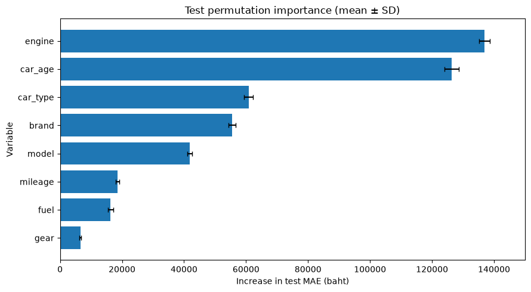
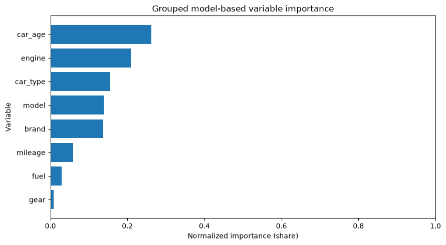
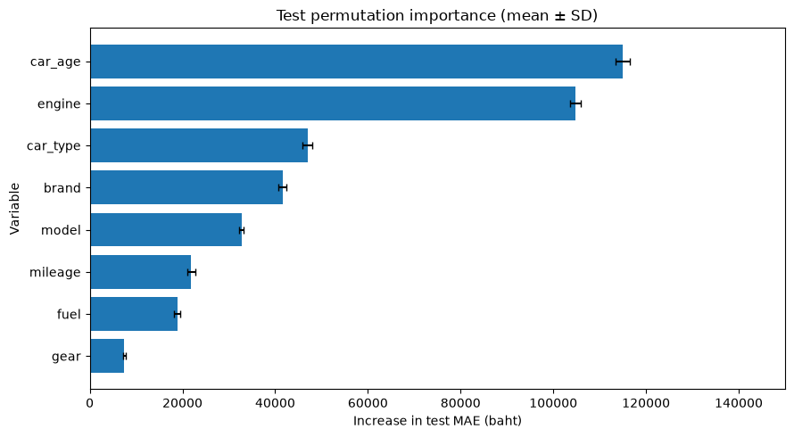
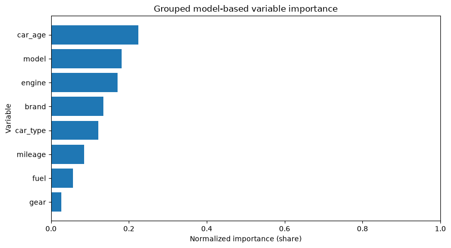
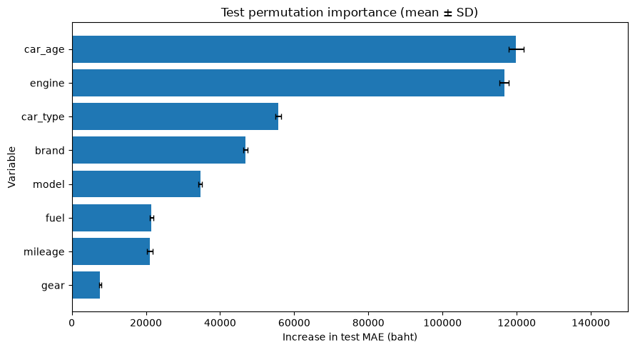
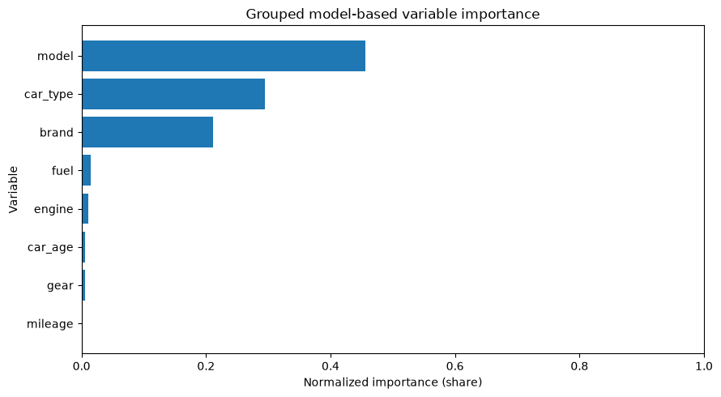
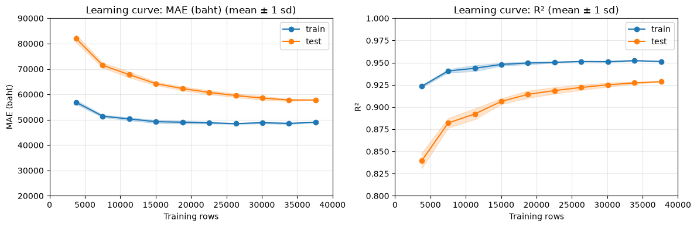
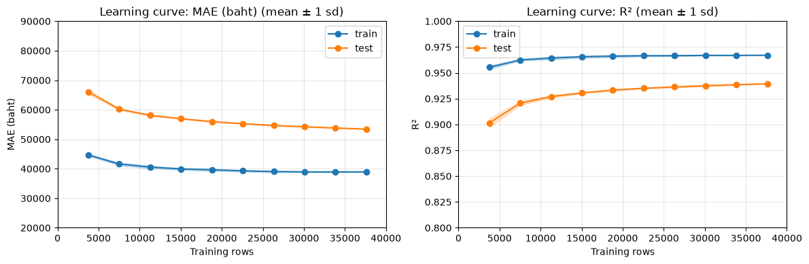
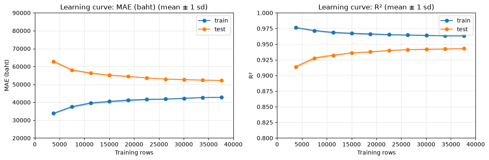

merge50minC
XGB / base มี test MAE ต่ำสุด · รอบใหม่ 2026-10-27
51,271 บาท
ตัวแปรสำคัญ 3 อันดับของโมเดลนี้: car_age → engine → car_type
TRAINING RESULTS / V5
ผลรอบล่าสุด · 3 งาน · DT / RF / XGB บน merge50minC · 46,074 แถว · ผู้ชนะ = CV MAE ต่ำสุด
อ่านจาก output ที่บันทึกไว้เท่านั้น ไม่มีการฝึกหรือรัน notebook ใหม่ · หน่วยเงิน: บาท
DT เลือก ccp_alpha จากทุก alpha บน pruning path ร่วมกับ grid ด้วย 5-fold CV; XGB เลือกจำนวนรอบด้วย early stopping ต่อ fold ซึ่งทำให้ CV MAE ของ XGB อาจต่ำกว่าความจริงเล็กน้อย (แถวตรวจเป็นตัวกำหนดจุดหยุด) ผลรอบเก่า 9 งานแยกไว้ในเมนู "ผลรอบเก่า (9 งาน)" ด้านล่าง
ข้อมูล 46,074 แถว · เลือกพารามิเตอร์ด้วย CV MAE ต่ำสุดบน train · ผลด้านล่างอ่านจากการรันที่บันทึกในโน้ตบุ๊ก
คะแนนบนแถวตรวจของแต่ละ fold · ค่าเฉลี่ย ± SD ข้าม 5 folds (ddof=0) · MAE/RMSE หน่วยบาท; MAPE แสดงเป็นเปอร์เซ็นต์ · ค่ายิ่งต่ำยิ่งดี
| โมเดล / แบบ | CV MAE ± SD (บาท) | CV RMSE ± SD (บาท) | CV MAPE ± SD |
|---|---|---|---|
| DT / base | 57,931 ± 477 | 89,802 ± 1,623 | 10.97% ± 0.07% |
| RF / base | 53,323 ± 256 | 80,694 ± 1,088 | 10.18% ± 0.09% |
| XGB / base | 52,256 ± 533 | 78,836 ± 1,536 | 9.96% ± 0.11% |
| โมเดล / แบบ | Test MAE (บาท) | Test RMSE (บาท) | Test MAPE | Test R² |
|---|---|---|---|---|
| DT / base | 56,628 | 85,630 | 10.72% | 0.9319 |
| RF / base | 52,275 | 78,252 | 9.98% | 0.9431 |
| XGB / base | 51,271 | 76,379 | 9.74% | 0.9458 |
CV 5 folds ใน train: ค่าเฉลี่ยและ SD (ddof=0) ตามตารางที่พิมพ์ในไฟล์
| train MAE | validation MAE | train RMSE | validation RMSE | train MAPE | validation MAPE | |
|---|---|---|---|---|---|---|
| fold 1 | 47,784 | 58,647 | 70,443 | 92,701 | 9.37% | 11.06% |
| fold 2 | 48,078 | 57,724 | 71,474 | 89,520 | 9.43% | 10.85% |
| fold 3 | 47,997 | 57,315 | 71,394 | 87,976 | 9.38% | 10.97% |
| fold 4 | 47,679 | 58,298 | 70,514 | 90,126 | 9.38% | 10.96% |
| fold 5 | 48,216 | 57,673 | 71,584 | 88,689 | 9.41% | 11.03% |
| mean | 47,951 | 57,931 | 71,082 | 89,802 | 9.39% | 10.97% |
| sd | 195 | 477 | 497 | 1,623 | 0.02% | 0.07% |
CV 5 folds ใน train: ค่าเฉลี่ยและ SD (ddof=0) ตามตารางที่พิมพ์ในไฟล์
| train MAE | validation MAE | train RMSE | validation RMSE | train MAPE | validation MAPE | |
|---|---|---|---|---|---|---|
| fold 1 | 38,457 | 53,799 | 58,396 | 82,415 | 7.35% | 10.30% |
| fold 2 | 38,637 | 53,178 | 59,094 | 80,447 | 7.36% | 10.09% |
| fold 3 | 38,677 | 53,057 | 59,103 | 79,006 | 7.38% | 10.21% |
| fold 4 | 38,613 | 53,233 | 58,712 | 80,916 | 7.38% | 10.06% |
| fold 5 | 38,619 | 53,347 | 58,822 | 80,688 | 7.36% | 10.21% |
| mean | 38,601 | 53,323 | 58,825 | 80,694 | 7.37% | 10.18% |
| sd | 75 | 256 | 263 | 1,088 | 0.01% | 0.09% |
CV 5 folds ใน train: ค่าเฉลี่ยและ SD (ddof=0) ตามตารางที่พิมพ์ในไฟล์
| train MAE | validation MAE | train RMSE | validation RMSE | train MAPE | validation MAPE | |
|---|---|---|---|---|---|---|
| fold 1 | 40,715 | 53,139 | 59,684 | 81,357 | 8.03% | 10.14% |
| fold 2 | 40,388 | 51,537 | 59,453 | 77,411 | 7.99% | 9.81% |
| fold 3 | 41,104 | 51,980 | 60,369 | 77,290 | 8.13% | 9.94% |
| fold 4 | 40,663 | 52,459 | 59,531 | 79,737 | 8.03% | 9.90% |
| fold 5 | 42,161 | 52,166 | 62,083 | 78,384 | 8.28% | 9.99% |
| mean | 41,006 | 52,256 | 60,224 | 78,836 | 8.09% | 9.96% |
| sd | 621 | 533 | 984 | 1,536 | 0.10% | 0.11% |
ผลรอบเก่าแยกไว้ในเมนู "ผลรอบเก่า" ด้านบน เพื่อไม่เทียบข้อมูลและวิธีเลือกโมเดลคนละรอบ
XGB / base มี test MAE ต่ำสุด · รอบใหม่ 2026-10-27
ตัวแปรสำคัญ 3 อันดับของโมเดลนี้: car_age → engine → car_type
เลือกผู้ชนะจาก test MAE ภายในรอบล่าสุด เป็นการสรุปเชิงพรรณนา ไม่ใช่หลักฐานยืนยันผลบนข้อมูลใหม่ ความสำคัญแบบ permutation วัด MAE ที่เพิ่มขึ้นเมื่อสลับตัวแปร ไม่ได้บอกเหตุและผล
| ชุดข้อมูล | รอบ | แถว | รุ่น (brand|model) | Train | Validation | Test |
|---|---|---|---|---|---|---|
| merge50minC | รอบใหม่ 2026-10-27 | 46,074 | 115 | 36,859 | 4,607 | 4,608 |
ข้อมูลรอบใหม่: ใช้ merge_50min_clean จำนวน 46,074 แถว เทียบกับ 47,001 แถวของรอบก่อน ถูกลบออก 927 แถวใน 3 ขั้นตอน คือ แถวที่เครื่องยนต์เกิน 3,500 cc จำนวน 2 แถว, แถวจากการตรวจรอบแรก 305 แถว และแถวที่ถูกระบุว่าผิดปกติ 620 แถว ส่วน sha256 ของไฟล์ข้อมูลไม่ได้ตรวจแล้ว
เลื่อนตารางแนวนอนได้ · แถวสีเน้น = test MAE ต่ำสุด · CV คือ validation MAE / RMSE / MAPE ของโมเดลที่เลือก บน 5 folds ใน train; mean ± SD อ่านจากตารางที่พิมพ์ (MAE/RMSE ปัดเป็นบาท, MAPE 4 ทศนิยมของสัดส่วน)
| โมเดล | ชุดข้อมูล | แบบ | รอบ | Test R² | RMSE (บาท) | MAE (บาท) | MAPE | CV MAE ± SD (บาท) | CV RMSE ± SD (บาท) | CV MAPE ± SD |
|---|---|---|---|---|---|---|---|---|---|---|
| DT | merge50minC | base | รอบใหม่ 2026-10-27 | 0.9319 | 85,630 | 56,628 | 10.72% | 57,931 ± 477 | 89,802 ± 1,623 | 10.97% ± 0.07% |
| RF | merge50minC | base | รอบใหม่ 2026-10-27 | 0.9431 | 78,252 | 52,275 | 9.98% | 53,323 ± 256 | 80,694 ± 1,088 | 10.18% ± 0.09% |
| XGB | merge50minC | base | รอบใหม่ 2026-10-27 | 0.9458 | 76,379 | 51,271 | 9.74% | 52,256 ± 533 | 78,836 ± 1,536 | 9.96% ± 0.11% |
ข้อควรระวังของ XGB รอบใหม่: จำนวนรอบเลือกด้วย early stopping บนแถวตรวจของแต่ละ fold ดังนั้น CV MAE ของ XGB อาจต่ำกว่าความจริงเล็กน้อย (แถวตรวจเป็นตัวกำหนดจุดหยุด) ส่วน test MAE ไม่ได้ใช้ตัดสินจุดหยุด
ดาวน์โหลดตัวเลขทั้งหมด (JSON) รวม train / validation / test, best params, CV และ importance
ค่าของโมเดลสุดท้ายจาก RESULT_JSON หรือสรุปผู้ชนะของแต่ละไฟล์; ค่าคงที่อ่านจาก source และค่าที่ไม่ได้ระบุอ่านจาก get_params() ของไลบรารีที่ติดตั้งขณะสร้างรายงาน โดยไม่ฝึกโมเดล
รอบใหม่: ที่มาของค่าที่ปรับคือ GridSearchCV, ผู้ชนะ = CV MAE ต่ำสุด (refit=MAE) ผู้ชนะคือชุดที่ mean CV MAE ต่ำสุด เสมอกันเลือกชุดแรก ไม่มีเกณฑ์จำนวนใบ · DT ccp_alpha: เลือกจากทุก alpha บน pruning path ร่วมกับ grid ด้วย 5-fold CV (CART) (ไม่มีรายการ alpha ตายตัวหรือกฎจำกัดจำนวน alpha) · XGB n_estimators: จำนวนรอบจาก early stopping ต่อ fold (ค่าเฉลี่ย) (เพดาน 1,000 รอบ หยุดเมื่อ MAE บนแถวตรวจไม่ดีขึ้น 50 รอบ; XGB รอบใหม่ใช้โค้ดค้นเองที่ทำงานเหมือน GridSearchCV แต่ไม่ได้เรียก GridSearchCV)
กราฟ OOB: ใช้เป็นที่มาเฉพาะเมื่อโค้ดระบุว่าตรึงจำนวนต้นจากกราฟ · กำหนดคงที่ในโค้ด: ส่งค่าเอง แม้เท่ากับ default · ค่าเริ่มต้นของไลบรารี: ไม่ส่งค่าเอง ระบุเวอร์ชันที่ติดตั้งขณะสร้างรายงาน ซึ่งไม่ใช่การยืนยันเวอร์ชันขณะฝึก; XGB None หมายถึงไม่ได้ระบุใน wrapper และ NaN คือค่าข้อมูลสูญหาย
เรียงค่าที่ค้นหา → ค่าคงที่ → ค่าเริ่มต้น; ค่าที่ไม่มีหลักฐานแสดงว่า ไม่พบในผลรัน และอยู่ในรายการที่ขาด · ตารางเลื่อนแนวนอนได้บนจอเล็ก
| พารามิเตอร์ | ค่าที่ใช้ | ที่มา | คำอธิบาย |
|---|---|---|---|
| ccp_alpha | 486064.99689526187 | GridSearchCV, ผู้ชนะ = CV MAE ต่ำสุด (refit=MAE); เลือกจากทุก alpha บน pruning path ร่วมกับ grid ด้วย 5-fold CV (CART) | ความแรงของการตัดกิ่ง; เลือกค่าของผู้ชนะที่ CV MAE เฉลี่ยต่ำสุด; เลือกจากทุก alpha บน pruning path ร่วมกับ grid ด้วย 5-fold CV (CART) (ลอง 364 ถึง 13,279 ค่าต่อคู่ รวม 87,088 ค่า); ตรวจขอบ: PASS (อยู่ในรายการ alpha ของคู่ผู้ชนะ)। |
| max_depth | 25 | GridSearchCV, ผู้ชนะ = CV MAE ต่ำสุด (refit=MAE) (ช่วงที่ค้น: [10, 15, 20, 25, null]) | ความลึกสูงสุดของต้นไม้; เลือกค่าของผู้ชนะที่ CV MAE เฉลี่ยต่ำสุด; ตรวจขอบ: PASS (อยู่ด้านในของ grid)। |
| min_samples_leaf | 5 | GridSearchCV, ผู้ชนะ = CV MAE ต่ำสุด (refit=MAE) (ช่วงที่ค้น: [1, 5, 7, 9, 12, 15]) | จำนวนแถวขั้นต่ำต่อใบ; เลือกค่าของผู้ชนะที่ CV MAE เฉลี่ยต่ำสุด; ตรวจขอบ: PASS (อยู่ด้านในของ grid)। |
| criterion | "squared_error" | กำหนดคงที่ในโค้ด | วัดคุณภาพการแตกกิ่งด้วย MSE (ค่าเริ่มต้น เหมาะกับการทายราคา); กำหนดคงที่ ไม่ได้ค้นใน grid ของไฟล์นี้। |
| max_features | null | กำหนดคงที่ในโค้ด | ทุกการแตกกิ่งเห็นตัวแปรครบ (ใช้กับต้นไม้ต้นเดียวได้ แต่ยังไม่ได้ทดสอบ); กำหนดคงที่ ไม่ได้ค้นใน grid ของไฟล์นี้। |
| max_leaf_nodes | null | กำหนดคงที่ในโค้ด | จำนวนใบสูงสุด None = ไม่จำกัด (ยังไม่ได้ทดสอบขีดจำกัดนี้); กำหนดคงที่ ไม่ได้ค้นใน grid ของไฟล์นี้। |
| min_impurity_decrease | 0.0 | กำหนดคงที่ในโค้ด | แตกกิ่งได้แม้ลด error น้อย (ยังไม่ได้ทดสอบเกณฑ์นี้); กำหนดคงที่ ไม่ได้ค้นใน grid ของไฟล์นี้। |
| min_samples_split | 2 | กำหนดคงที่ในโค้ด | รถขั้นต่ำในโหนดก่อนแตกกิ่ง (ค่าเริ่มต้น ยังไม่ได้ทดสอบการปรับ); กำหนดคงที่ ไม่ได้ค้นใน grid ของไฟล์นี้। |
| min_weight_fraction_leaf | 0.0 | กำหนดคงที่ในโค้ด | สัดส่วนน้ำหนักขั้นต่ำต่อใบ 0 = ไม่ใช้ (ทุกแถวน้ำหนักเท่ากัน); กำหนดคงที่ ไม่ได้ค้นใน grid ของไฟล์นี้। |
| monotonic_cst | null | กำหนดคงที่ในโค้ด | ไม่บังคับทิศทางความสัมพันธ์ของตัวแปรกับราคา; กำหนดคงที่ ไม่ได้ค้นใน grid ของไฟล์นี้। |
| random_state | 99 | กำหนดคงที่ในโค้ด | เลขสุ่มคงที่ ใช้ตัดสินกรณีจุดตัดดีเท่ากัน ให้ผลซ้ำได้; กำหนดคงที่ ไม่ได้ค้นใน grid ของไฟล์นี้। |
| splitter | "best" | กำหนดคงที่ในโค้ด | ลองทุกจุดตัดแล้วเลือกจุดที่ดีที่สุด ไม่สุ่ม; กำหนดคงที่ ไม่ได้ค้นใน grid ของไฟล์นี้। |
| SEED | 99 | กำหนดคงที่ในโค้ด | เลขสุ่มกลาง ใช้ทุกที่ที่มีการสุ่ม เพื่อให้ผลซ้ำได้। |
| N_FOLDS | 5 | กำหนดคงที่ในโค้ด | จำนวน fold ของ cross-validation। |
| NUM_COLS | ["engine", "mileage", "car_age"] | กำหนดคงที่ในโค้ด | feature ตัวเลข। |
| CAT_COLS | ["brand", "model", "car_type", "fuel", "gear"] | กำหนดคงที่ในโค้ด | feature ประเภทกลุ่ม। |
| MODEL_NAME | "DT" | กำหนดคงที่ในโค้ด | ชื่อโมเดล ใช้ในผลลัพธ์ JSON। |
| VERSION | "v5" | กำหนดคงที่ในโค้ด | เวอร์ชันของวิธีฝึก ใช้ในผลลัพธ์ JSON। |
| CURRENT_YEAR | 2026 | กำหนดคงที่ในโค้ด | ปีที่เก็บข้อมูล ใช้คำนวณ car_age = CURRENT_YEAR - year। |
| TRAIN_SIZE | 0.8 | กำหนดคงที่ในโค้ด | สัดส่วนแบ่ง train / validation / test। |
| VAL_SIZE | 0.1 | กำหนดคงที่ในโค้ด | สัดส่วนแบ่ง train / validation / test। |
| TEST_SIZE | 0.1 | กำหนดคงที่ในโค้ด | สัดส่วนแบ่ง train / validation / test। |
| LC_FRACTIONS | [0.1, 0.2, 0.3, 0.4, 0.5, 0.6, 0.7, 0.8, 0.9, 1.0] | กำหนดคงที่ในโค้ด | สัดส่วน train ที่ใช้วาด learning curve: 10% ถึง 100%। |
| LC_REPEATS | 5 | กำหนดคงที่ในโค้ด | จำนวนรอบสุ่มซ้ำของ learning curve ต่อหนึ่งสัดส่วน। |
| SEARCH_JOBS | 8 | กำหนดคงที่ในโค้ด | จำนวนงานค้นหาที่รันพร้อมกันใน GridSearchCV (SEARCH_JOBS x MODEL_THREADS ไม่เกิน 20)। |
| MODEL_THREADS | 1 | กำหนดคงที่ในโค้ด | จำนวน thread ของไลบรารีคำนวณภายในแต่ละงาน (DT ฝึกด้วย thread เดียวอยู่แล้ว)। |
| MAE_AXIS | [20000, 90000] | กำหนดคงที่ในโค้ด | แกน MAE (บาท) ของ learning curve และ validation curve ครอบทุกโมเดล। |
| R2_AXIS | [0.8, 1.0] | กำหนดคงที่ในโค้ด | แกน R² ของ learning curve। |
| ROWS_AXIS | [0, 40000] | กำหนดคงที่ในโค้ด | แกน x ของ learning curve: จำนวนแถวฝึก (ทุกโมเดลฝึกบนข้อมูลชุดเดียวกัน)। |
| FOLD_AXIS | [-0.5, 4.5] | กำหนดคงที่ในโค้ด | แกน x ของกราฟแท่งราย fold: ตำแหน่ง 0..4 (ต้องสัมพันธ์กับ N_FOLDS = 5)। |
| MAE_BAR_AXIS | [0, 70000] | กำหนดคงที่ในโค้ด | แกน y ของกราฟแท่ง MAE ต่อ fold: แท่งต้องเริ่มที่ 0 จึงแยกจาก MAE_AXIS। |
| MAE_CCP_AXIS | [50000, 130000] | กำหนดคงที่ในโค้ด | แกน y ของกราฟ ccp_alpha (เฉพาะ DT): ฝั่ง alpha สูงเกิน MAE_AXIS จึงใช้ช่วงซูมแยก। |
| MAE_OOB_AXIS | [52000, 54000] | กำหนดคงที่ในโค้ด | แกน y ของกราฟ OOB (เฉพาะ RF): เส้นแบนมาก ถ้าใช้ MAE_AXIS เส้นจะเป็นขีดตรง จึงใช้ช่วงซูมแยก। |
| MAE_ROUND_AXIS | [30000, 70000] | กำหนดคงที่ในโค้ด | แกน y ของกราฟรายรอบ (เฉพาะ XGB): ตัดรอบแรกๆ ที่ MAE สูงมากทิ้งเหมือนเดิม จึงใช้ช่วงซูมแยก। |
| RUN_ID | "DT_merge50minC" | กำหนดคงที่ในโค้ด | ชื่อการทดลอง; กำหนดคงที่โดยไม่ได้ปรับจูน। |
| DATASET | "merge_50min_clean.csv" | กำหนดคงที่ในโค้ด | ชื่อชุดข้อมูล; กำหนดคงที่โดยไม่ได้ปรับจูน। |
| VARIANT | "base" | กำหนดคงที่ในโค้ด | รูปแบบ base หรือ adj; กำหนดคงที่โดยไม่ได้ปรับจูน। |
| PERM_AXIS | [0, 150000] | กำหนดคงที่ในโค้ด | ช่วงแกนกราฟ permutation importance; กำหนดคงที่โดยไม่ได้ปรับจูน। |
| SHARE_AXIS | [0, 1.0] | กำหนดคงที่ในโค้ด | ช่วงแกนสัดส่วนความสำคัญตัวแปร; กำหนดคงที่โดยไม่ได้ปรับจูน। |
| ccp_alpha.candidates | "ทุก alpha บน pruning path" | pruning path (CART) | ใช้ทุก alpha บน pruning path ของแต่ละคู่ (max_depth, min_samples_leaf) ที่สร้างจาก train ทั้งชุด ไม่จำกัดจำนวนและไม่ใช้เกณฑ์ใบขั้นต่ำ แล้ววัดทุก alpha ด้วย 5-fold CV ร่วมกับ grid (ลอง 364 ถึง 13,279 ค่าต่อคู่ รวม 87,088 ค่า)। |
| pipeline.target_transform | "identity (บาท)" | กำหนดคงที่ในโค้ด | ใช้ราคาเป็นบาทโดยไม่แปลงเป้าหมาย; กำหนดคงที่ไม่ได้ปรับจูน। |
| FoldOneHot.scale_numeric | false | กำหนดคงที่ในโค้ด | กำหนดว่าจะปรับสเกลเฉพาะตัวเลขในแต่ละ fold หรือไม่ตาม pipeline; กำหนดคงที่ไม่ได้ปรับจูน। |
| scaler | "ไม่มี" | กำหนดคงที่ในโค้ด | ส่งค่าตัวเลขเดิมเข้าโมเดลตามโค้ดโดยไม่ได้ปรับจูนการ scale। |
| encoder | "FoldOneHot; numeric=float; dummy=float; dense" | กำหนดคงที่ในโค้ด | แปลงหมวดหมู่เป็น 0/1 และต่อกับตัวเลขโดย fit ใหม่ในแต่ละ fold เพื่อป้องกันข้อมูลรั่ว। |
| FoldOneHot.reference | "most frequent; ties: name ascending, stable" | กำหนดคงที่ในโค้ด | ทิ้งระดับที่พบบ่อยที่สุดเพื่อลดคอลัมน์ซ้ำซ้อนและใช้ชื่อเรียงตัดสินเมื่อความถี่เสมอกันตามโค้ด। |
| FoldOneHot.unseen | "all zeros" | กำหนดคงที่ในโค้ด | ระดับที่ไม่เคยพบในแถวฝึกได้ศูนย์ทุกคอลัมน์ตามโค้ดเพื่อให้แปลงข้อมูลใหม่ได้। |
| split.strategy | "stratify brand|model" | กำหนดคงที่ในโค้ด | ใช้กติกาแบ่งชุดของไฟล์นี้ร่วมกับ TRAIN_SIZE/VAL_SIZE/TEST_SIZE และ SEED ตามโค้ดโดยไม่ได้ปรับจูน। |
| KFold.shuffle | true | กำหนดคงที่ในโค้ด | สลับลำดับแถวก่อนแบ่ง fold เพื่อให้กระจายข้อมูล; กำหนดคงที่ตามโค้ดโดยไม่ได้ปรับจูน। |
| KFold.random_state | 99 | กำหนดคงที่ในโค้ด | เลขสุ่มของการแบ่ง fold เพื่อทำผลซ้ำ; กำหนดคงที่ตามโค้ดโดยไม่ได้ปรับจูน। |
| GridSearchCV.scoring | {"MAE": "neg_mean_absolute_error", "RMSE": "neg_root_mean_squared_error", "MAPE": "neg_mean_absolute_percentage_error", "R2": "r2"} | กำหนดคงที่ในโค้ด | ตัววัด CV หน่วยบาท ใช้ MAE เลือกผู้ชนะ; กำหนดคงที่ตามโค้ดโดยไม่ได้ปรับจูน। |
| GridSearchCV.refit | "MAE" | กำหนดคงที่ในโค้ด | เลือกผู้ชนะที่ mean CV MAE ต่ำสุดแล้วฝึกผู้ชนะบน train ทั้งชุด; กำหนดคงที่ตามโค้ดโดยไม่ได้ปรับจูน। |
| GridSearchCV.return_train_score | true | กำหนดคงที่ในโค้ด | เก็บคะแนน train เพื่อเทียบกับ CV; กำหนดคงที่ตามโค้ดโดยไม่ได้ปรับจูน। |
| GridSearchCV.error_score | "raise" | กำหนดคงที่ในโค้ด | ให้หยุดเมื่อการฝึกเกิดข้อผิดพลาด; กำหนดคงที่ตามโค้ดโดยไม่ได้ปรับจูน। |
| GridSearchCV.n_jobs | 8 | กำหนดคงที่ในโค้ด | จำนวนงานค้นหาที่ทำพร้อมกัน; กำหนดคงที่ตามโค้ดโดยไม่ได้ปรับจูน। |
| GridSearchCV.pre_dispatch | 8 | กำหนดคงที่ในโค้ด | จำนวนงานที่ส่งล่วงหน้าเพื่อคุมหน่วยความจำ; กำหนดคงที่ตามโค้ดโดยไม่ได้ปรับจูน। |
| GridSearchCV.verbose | 0 | กำหนดคงที่ในโค้ด | ระดับข้อความความคืบหน้าของการค้นหา; กำหนดคงที่ตามโค้ดโดยไม่ได้ปรับจูน। |
| selection.minCV | "min mean CV MAE; เสมอ → index แรก" | กำหนดคงที่ในโค้ด | ผู้ชนะคือชุดที่ CV MAE เฉลี่ยต่ำสุด (refit=MAE) ไม่มีเกณฑ์จำนวนใบ; จำนวนใบแสดงเป็นข้อมูลประกอบเท่านั้น। |
| พารามิเตอร์ | ค่าที่ใช้ | ที่มา | คำอธิบาย |
|---|---|---|---|
| max_features | 0.3 | GridSearchCV, ผู้ชนะ = CV MAE ต่ำสุด (refit=MAE) (ช่วงที่ค้น: [0.2, 0.3, 0.4, 0.5, 0.6, 0.8, 1.0]) | จำนวนหรือสัดส่วนตัวแปรที่ใช้เลือกจุดแตกกิ่ง; เลือกค่าของผู้ชนะที่ CV MAE เฉลี่ยต่ำสุด; ตรวจขอบ: PASS (อยู่ด้านในของ grid)। |
| min_samples_leaf | 2 | GridSearchCV, ผู้ชนะ = CV MAE ต่ำสุด (refit=MAE) (ช่วงที่ค้น: [1, 2, 3, 4, 6, 8]) | จำนวนแถวขั้นต่ำต่อใบ; เลือกค่าของผู้ชนะที่ CV MAE เฉลี่ยต่ำสุด; ตรวจขอบ: PASS (อยู่ด้านในของ grid)। |
| bootstrap | true | กำหนดคงที่ในโค้ด | แต่ละต้นฝึกด้วยแถวที่สุ่มแบบหยิบแล้วใส่คืน (หัวใจของป่าสุ่ม และจำเป็นต่อ OOB); กำหนดคงที่ ไม่ได้ค้นใน grid ของไฟล์นี้। |
| ccp_alpha | 0.0 | กำหนดคงที่ในโค้ด | ไม่ตัดกิ่ง ป่าคุมความซับซ้อนด้วยการเฉลี่ยหลายต้นและ min_samples_leaf; กำหนดคงที่ ไม่ได้ค้นใน grid ของไฟล์นี้। |
| criterion | "squared_error" | กำหนดคงที่ในโค้ด | วัดคุณภาพการแตกกิ่งด้วย MSE (ค่าเริ่มต้น เร็ว เหมาะกับการทายราคา); กำหนดคงที่ ไม่ได้ค้นใน grid ของไฟล์นี้। |
| max_depth | null | กำหนดคงที่ในโค้ด | ความลึกสูงสุด None = ไม่จำกัด ขนาดต้นไม้คุมด้วย min_samples_leaf แทน; กำหนดคงที่ ไม่ได้ค้นใน grid ของไฟล์นี้। |
| max_leaf_nodes | null | กำหนดคงที่ในโค้ด | จำนวนใบสูงสุด None = ไม่จำกัด (ยังไม่ได้ทดสอบขีดจำกัดนี้); กำหนดคงที่ ไม่ได้ค้นใน grid ของไฟล์นี้। |
| max_samples | null | กำหนดคงที่ในโค้ด | bootstrap มีขนาดเท่าแถวฝึกทั้งหมด (pilot: ขนาดเล็กลงทำให้ MAE แย่ลง); กำหนดคงที่ ไม่ได้ค้นใน grid ของไฟล์นี้। |
| min_impurity_decrease | 0.0 | กำหนดคงที่ในโค้ด | แตกกิ่งได้แม้ลด error น้อย (ยังไม่ได้ทดสอบเกณฑ์นี้); กำหนดคงที่ ไม่ได้ค้นใน grid ของไฟล์นี้। |
| min_samples_split | 2 | กำหนดคงที่ในโค้ด | รถขั้นต่ำในโหนดก่อนแตกกิ่ง (ค่าเริ่มต้น ยังไม่ได้ทดสอบการปรับ); กำหนดคงที่ ไม่ได้ค้นใน grid ของไฟล์นี้। |
| min_weight_fraction_leaf | 0.0 | กำหนดคงที่ในโค้ด | สัดส่วนน้ำหนักขั้นต่ำต่อใบ 0 = ไม่ใช้ (ทุกแถวน้ำหนักเท่ากัน); กำหนดคงที่ ไม่ได้ค้นใน grid ของไฟล์นี้। |
| monotonic_cst | null | กำหนดคงที่ในโค้ด | ไม่บังคับทิศทางความสัมพันธ์ของตัวแปรกับราคา; กำหนดคงที่ ไม่ได้ค้นใน grid ของไฟล์นี้। |
| n_estimators | 300 | กราฟ OOB | จำนวนต้นไม้ ตั้งตายตัวตรงที่ OOB error แบนแล้ว (เซลล์ [03]); กำหนดคงที่ ไม่ได้ค้นใน grid ของไฟล์นี้। |
| n_jobs | 20 | กำหนดคงที่ในโค้ด | จำนวน thread ที่ใช้ฝึกและทายพร้อมกัน (เซลล์ [03]); กำหนดคงที่ ไม่ได้ค้นใน grid ของไฟล์นี้। |
| oob_score | false | กำหนดคงที่ในโค้ด | ไม่คำนวณ OOB ระหว่าง grid search เพื่อประหยัดเวลา (เซลล์ [38] เปิดเอง); กำหนดคงที่ ไม่ได้ค้นใน grid ของไฟล์นี้। |
| random_state | 99 | กำหนดคงที่ในโค้ด | เลขสุ่มคงที่ ทั้ง bootstrap และการสุ่ม feature ให้ผลซ้ำได้; กำหนดคงที่ ไม่ได้ค้นใน grid ของไฟล์นี้। |
| verbose | 0 | กำหนดคงที่ในโค้ด | ไม่พิมพ์ความคืบหน้าระหว่างฝึก; กำหนดคงที่ ไม่ได้ค้นใน grid ของไฟล์นี้। |
| warm_start | false | กำหนดคงที่ในโค้ด | ฝึกใหม่ทั้งป่าทุกครั้ง (เซลล์ [38] เปิดเพื่อเพิ่มต้นไม้ทีละช่วง); กำหนดคงที่ ไม่ได้ค้นใน grid ของไฟล์นี้। |
| SEED | 99 | กำหนดคงที่ในโค้ด | เลขสุ่มกลาง ใช้ทุกที่ที่มีการสุ่ม เพื่อให้ผลซ้ำได้। |
| N_FOLDS | 5 | กำหนดคงที่ในโค้ด | จำนวน fold ของ cross-validation। |
| NUM_COLS | ["engine", "mileage", "car_age"] | กำหนดคงที่ในโค้ด | feature ตัวเลข। |
| CAT_COLS | ["brand", "model", "car_type", "fuel", "gear"] | กำหนดคงที่ในโค้ด | feature ประเภทกลุ่ม। |
| MODEL_NAME | "RF" | กำหนดคงที่ในโค้ด | ชื่อโมเดล ใช้ในผลลัพธ์ JSON। |
| VERSION | "v5" | กำหนดคงที่ในโค้ด | เวอร์ชันของวิธีฝึก ใช้ในผลลัพธ์ JSON। |
| CURRENT_YEAR | 2026 | กำหนดคงที่ในโค้ด | ปีที่เก็บข้อมูล ใช้คำนวณ car_age = CURRENT_YEAR - year। |
| TRAIN_SIZE | 0.8 | กำหนดคงที่ในโค้ด | สัดส่วนแบ่ง train / validation / test। |
| VAL_SIZE | 0.1 | กำหนดคงที่ในโค้ด | สัดส่วนแบ่ง train / validation / test। |
| TEST_SIZE | 0.1 | กำหนดคงที่ในโค้ด | สัดส่วนแบ่ง train / validation / test। |
| N_TREES | 300 | กำหนดคงที่ในโค้ด | จำนวนต้นไม้ในป่า (n_estimators) ตั้งตายตัว ไม่ปรับใน grid। |
| OOB_TREE_COUNTS | [50, 100, 150, 200, 300, 400, 600, 800, 1000] | กำหนดคงที่ในโค้ด | จำนวนต้นที่วัด OOB error। |
| LC_FRACTIONS | [0.1, 0.2, 0.3, 0.4, 0.5, 0.6, 0.7, 0.8, 0.9, 1.0] | กำหนดคงที่ในโค้ด | สัดส่วน train ที่ใช้วาด learning curve: 10% ถึง 100%। |
| LC_REPEATS | 5 | กำหนดคงที่ในโค้ด | จำนวนรอบสุ่มซ้ำของ learning curve ต่อหนึ่งสัดส่วน। |
| SEARCH_JOBS | 1 | กำหนดคงที่ในโค้ด | จำนวนงานค้นหาที่รันพร้อมกันใน GridSearchCV (1 = ทีละโมเดล ประหยัดหน่วยความจำ)। |
| MODEL_THREADS | 20 | กำหนดคงที่ในโค้ด | จำนวน thread ที่ป่าใช้ฝึกและทายพร้อมกัน (n_jobs ของ RandomForestRegressor)। |
| MAE_AXIS | [20000, 90000] | กำหนดคงที่ในโค้ด | แกน MAE (บาท) ของ learning curve และ validation curve ครอบทุกโมเดล। |
| R2_AXIS | [0.8, 1.0] | กำหนดคงที่ในโค้ด | แกน R² ของ learning curve। |
| ROWS_AXIS | [0, 40000] | กำหนดคงที่ในโค้ด | แกน x ของ learning curve: จำนวนแถวฝึก (ทุกโมเดลฝึกบนข้อมูลชุดเดียวกัน)। |
| FOLD_AXIS | [-0.5, 4.5] | กำหนดคงที่ในโค้ด | แกน x ของกราฟแท่งราย fold: ตำแหน่ง 0..4 (ต้องสัมพันธ์กับ N_FOLDS = 5)। |
| MAE_BAR_AXIS | [0, 70000] | กำหนดคงที่ในโค้ด | แกน y ของกราฟแท่ง MAE ต่อ fold: แท่งต้องเริ่มที่ 0 จึงแยกจาก MAE_AXIS। |
| MAE_CCP_AXIS | [50000, 130000] | กำหนดคงที่ในโค้ด | แกน y ของกราฟ ccp_alpha (เฉพาะ DT): ฝั่ง alpha สูงเกิน MAE_AXIS จึงใช้ช่วงซูมแยก। |
| MAE_OOB_AXIS | [52000, 54000] | กำหนดคงที่ในโค้ด | แกน y ของกราฟ OOB (เฉพาะ RF): เส้นแบนมาก ถ้าใช้ MAE_AXIS เส้นจะเป็นขีดตรง จึงใช้ช่วงซูมแยก। |
| MAE_ROUND_AXIS | [30000, 70000] | กำหนดคงที่ในโค้ด | แกน y ของกราฟรายรอบ (เฉพาะ XGB): ตัดรอบแรกๆ ที่ MAE สูงมากทิ้งเหมือนเดิม จึงใช้ช่วงซูมแยก। |
| RUN_ID | "RF_merge50minC" | กำหนดคงที่ในโค้ด | ชื่อการทดลอง; กำหนดคงที่โดยไม่ได้ปรับจูน। |
| DATASET | "merge_50min_clean.csv" | กำหนดคงที่ในโค้ด | ชื่อชุดข้อมูล; กำหนดคงที่โดยไม่ได้ปรับจูน। |
| VARIANT | "base" | กำหนดคงที่ในโค้ด | รูปแบบ base หรือ adj; กำหนดคงที่โดยไม่ได้ปรับจูน। |
| PERM_AXIS | [0, 150000] | กำหนดคงที่ในโค้ด | ช่วงแกนกราฟ permutation importance; กำหนดคงที่โดยไม่ได้ปรับจูน। |
| SHARE_AXIS | [0, 1.0] | กำหนดคงที่ในโค้ด | ช่วงแกนสัดส่วนความสำคัญตัวแปร; กำหนดคงที่โดยไม่ได้ปรับจูน। |
| pipeline.target_transform | "identity (บาท)" | กำหนดคงที่ในโค้ด | ใช้ราคาเป็นบาทโดยไม่แปลงเป้าหมาย; กำหนดคงที่ไม่ได้ปรับจูน। |
| FoldOneHot.scale_numeric | false | กำหนดคงที่ในโค้ด | กำหนดว่าจะปรับสเกลเฉพาะตัวเลขในแต่ละ fold หรือไม่ตาม pipeline; กำหนดคงที่ไม่ได้ปรับจูน। |
| scaler | "ไม่มี" | กำหนดคงที่ในโค้ด | ส่งค่าตัวเลขเดิมเข้าโมเดลตามโค้ดโดยไม่ได้ปรับจูนการ scale। |
| encoder | "FoldOneHot; numeric=float; dummy=float; dense" | กำหนดคงที่ในโค้ด | แปลงหมวดหมู่เป็น 0/1 และต่อกับตัวเลขโดย fit ใหม่ในแต่ละ fold เพื่อป้องกันข้อมูลรั่ว। |
| FoldOneHot.reference | "most frequent; ties: name ascending, stable" | กำหนดคงที่ในโค้ด | ทิ้งระดับที่พบบ่อยที่สุดเพื่อลดคอลัมน์ซ้ำซ้อนและใช้ชื่อเรียงตัดสินเมื่อความถี่เสมอกันตามโค้ด। |
| FoldOneHot.unseen | "all zeros" | กำหนดคงที่ในโค้ด | ระดับที่ไม่เคยพบในแถวฝึกได้ศูนย์ทุกคอลัมน์ตามโค้ดเพื่อให้แปลงข้อมูลใหม่ได้। |
| split.strategy | "stratify brand|model" | กำหนดคงที่ในโค้ด | ใช้กติกาแบ่งชุดของไฟล์นี้ร่วมกับ TRAIN_SIZE/VAL_SIZE/TEST_SIZE และ SEED ตามโค้ดโดยไม่ได้ปรับจูน। |
| KFold.shuffle | true | กำหนดคงที่ในโค้ด | สลับลำดับแถวก่อนแบ่ง fold เพื่อให้กระจายข้อมูล; กำหนดคงที่ตามโค้ดโดยไม่ได้ปรับจูน। |
| KFold.random_state | 99 | กำหนดคงที่ในโค้ด | เลขสุ่มของการแบ่ง fold เพื่อทำผลซ้ำ; กำหนดคงที่ตามโค้ดโดยไม่ได้ปรับจูน। |
| GridSearchCV.scoring | "{'MAE': 'neg_mean_absolute_error', 'RMSE': 'neg_root_mean_squared_error', 'MAPE': 'neg_mean_absolute_percentage_error', 'R2': 'r2', 'leaves': count_leaves_scorer}" | กำหนดคงที่ในโค้ด | ตัววัด CV หน่วยบาท ใช้ MAE เลือกผู้ชนะ; กำหนดคงที่ตามโค้ดโดยไม่ได้ปรับจูน। |
| GridSearchCV.refit | "MAE" | กำหนดคงที่ในโค้ด | เลือกผู้ชนะที่ mean CV MAE ต่ำสุดแล้วฝึกผู้ชนะบน train ทั้งชุด; กำหนดคงที่ตามโค้ดโดยไม่ได้ปรับจูน। |
| GridSearchCV.return_train_score | true | กำหนดคงที่ในโค้ด | เก็บคะแนน train เพื่อเทียบกับ CV; กำหนดคงที่ตามโค้ดโดยไม่ได้ปรับจูน। |
| GridSearchCV.error_score | "raise" | กำหนดคงที่ในโค้ด | ให้หยุดเมื่อการฝึกเกิดข้อผิดพลาด; กำหนดคงที่ตามโค้ดโดยไม่ได้ปรับจูน। |
| GridSearchCV.n_jobs | 1 | กำหนดคงที่ในโค้ด | จำนวนงานค้นหาที่ทำพร้อมกัน; กำหนดคงที่ตามโค้ดโดยไม่ได้ปรับจูน। |
| GridSearchCV.pre_dispatch | 1 | กำหนดคงที่ในโค้ด | จำนวนงานที่ส่งล่วงหน้าเพื่อคุมหน่วยความจำ; กำหนดคงที่ตามโค้ดโดยไม่ได้ปรับจูน। |
| GridSearchCV.verbose | 0 | กำหนดคงที่ในโค้ด | ระดับข้อความความคืบหน้าของการค้นหา; กำหนดคงที่ตามโค้ดโดยไม่ได้ปรับจูน। |
| selection.minCV | "min mean CV MAE; เสมอ → index แรก" | กำหนดคงที่ในโค้ด | ผู้ชนะคือชุดที่ CV MAE เฉลี่ยต่ำสุด (refit=MAE) ไม่มีเกณฑ์จำนวนใบ; จำนวนใบแสดงเป็นข้อมูลประกอบเท่านั้น। |
| พารามิเตอร์ | ค่าที่ใช้ | ที่มา | คำอธิบาย |
|---|---|---|---|
| max_depth | 16 | ค้นทุกชุดด้วย 5-fold CV (โค้ดเอง), ผู้ชนะ = CV MAE ต่ำสุด (ช่วงที่ค้น: [8, 12, 16, 20, 24]) | ความลึกสูงสุดของต้นไม้; เลือกค่าของผู้ชนะที่ CV MAE เฉลี่ยต่ำสุด; ตรวจขอบ: PASS (inside)। |
| min_child_weight | 1 | ค้นทุกชุดด้วย 5-fold CV (โค้ดเอง), ผู้ชนะ = CV MAE ต่ำสุด (ช่วงที่ค้น: [1, 5, 20]) | น้ำหนัก Hessian ขั้นต่ำของโหนดลูก; เลือกค่าของผู้ชนะที่ CV MAE เฉลี่ยต่ำสุด; ตรวจขอบ: PASS (natural bound) (min edge)। |
| n_estimators | 122 | จำนวนรอบจาก early stopping ต่อ fold (ค่าเฉลี่ย) | จำนวนต้นไม้หรือรอบ boosting; early stopping ต่อ fold (เพดาน MAX_ROUNDS, หยุดเมื่อ MAE บนแถวตรวจของ fold ไม่ดีขึ้นต่อเนื่อง EARLY_STOPPING_ROUNDS รอบ) จำนวนรอบของชุด = ค่าเฉลี่ยของ fold ปัดเป็นจำนวนเต็ม; CV MAE แบบนี้อาจต่ำกว่าจริงเล็กน้อยเพราะแถวตรวจเป็นตัวกำหนดจุดหยุด; ตรวจเพดาน: PASS: early stopping ทำงานในทุก fold ของผู้ชนะ (รอบ [128, 139, 124, 122, 97] ต่ำกว่าเพดาน MAX_ROUNDS = 1,000)। |
| reg_lambda | 10.0 | ค้นทุกชุดด้วย 5-fold CV (โค้ดเอง), ผู้ชนะ = CV MAE ต่ำสุด (ช่วงที่ค้น: [0.0, 1.0, 10.0, 100.0]) | บทลงโทษ L2 ของค่าในใบ; เลือกค่าของผู้ชนะที่ CV MAE เฉลี่ยต่ำสุด; ตรวจขอบ: PASS (inside)। |
| objective | "reg:squarederror" | กำหนดคงที่ในโค้ด | เรียนรู้จากความผิดพลาดยกกำลังสอง (ค่าเริ่มต้น); กำหนดคงที่ ไม่ได้ค้นใน grid ของไฟล์นี้। |
| booster | "gbtree" | กำหนดคงที่ในโค้ด | ใช้ต้นไม้เป็นตัวเรียนรู้ย่อย (ค่าเริ่มต้น); กำหนดคงที่ ไม่ได้ค้นใน grid ของไฟล์นี้। |
| colsample_bytree | 0.8 | กำหนดคงที่ในโค้ด | แต่ละต้นสุ่มเห็นคอลัมน์ 80%; กำหนดคงที่ ไม่ได้ค้นใน grid ของไฟล์นี้। |
| early_stopping_rounds | null | กำหนดคงที่ในโค้ด | [search] ค่าตั้งต้น = ไม่หยุดก่อน (เซลล์ [22] ตั้งเป็น EARLY_STOPPING_ROUNDS); กำหนดคงที่ ไม่ได้ค้นใน grid ของไฟล์นี้। |
| eval_metric | "mae" | กำหนดคงที่ในโค้ด | ใช้ตอนส่ง eval_set: เป็นตัวชี้วัดของ early stopping (เซลล์ [22]) และกราฟรายรอบ (เซลล์ [38]); กำหนดคงที่ ไม่ได้ค้นใน grid ของไฟล์นี้। |
| gamma | 0.0 | กำหนดคงที่ในโค้ด | error ต้องลดอย่างน้อยเท่านี้จึงแตกกิ่ง 0 = ไม่บังคับ (ค่าเริ่มต้น); กำหนดคงที่ ไม่ได้ค้นใน grid ของไฟล์นี้। |
| grow_policy | "depthwise" | กำหนดคงที่ในโค้ด | โตทีละชั้นจนถึง max_depth (ค่าเริ่มต้น); กำหนดคงที่ ไม่ได้ค้นใน grid ของไฟล์นี้। |
| learning_rate | 0.1 | กำหนดคงที่ในโค้ด | ย่อขนาดการแก้ของแต่ละต้น (คงที่ ดูเซลล์ [03]); กำหนดคงที่ ไม่ได้ค้นใน grid ของไฟล์นี้। |
| max_bin | 256 | กำหนดคงที่ในโค้ด | จำนวนช่วงต่อคอลัมน์ของ hist (ค่าเริ่มต้น); กำหนดคงที่ ไม่ได้ค้นใน grid ของไฟล์นี้। |
| max_delta_step | 0.0 | กำหนดคงที่ในโค้ด | จำกัดขนาดค่าในใบ 0 = ไม่จำกัด (ค่าเริ่มต้น); กำหนดคงที่ ไม่ได้ค้นใน grid ของไฟล์นี้। |
| n_jobs | 3 | กำหนดคงที่ในโค้ด | จำนวน thread ภายในโมเดล (คงที่ทั้งโน้ตบุ๊ค); กำหนดคงที่ ไม่ได้ค้นใน grid ของไฟล์นี้। |
| random_state | 99 | กำหนดคงที่ในโค้ด | เลขสุ่มคงที่ ให้ผลซ้ำได้; กำหนดคงที่ ไม่ได้ค้นใน grid ของไฟล์นี้। |
| reg_alpha | 0.0 | กำหนดคงที่ในโค้ด | บทลงโทษ L1 ของค่าในใบ 0 = ไม่ใช้ (ค่าเริ่มต้น); กำหนดคงที่ ไม่ได้ค้นใน grid ของไฟล์นี้। |
| subsample | 0.8 | กำหนดคงที่ในโค้ด | แต่ละต้นสุ่มเห็นแถว 80% ของข้อมูลฝึก; กำหนดคงที่ ไม่ได้ค้นใน grid ของไฟล์นี้। |
| tree_method | "hist" | กำหนดคงที่ในโค้ด | แบ่งค่าเป็นช่วง (histogram) ก่อนหาจุดตัด เร็วกว่าวิธี exact มาก; กำหนดคงที่ ไม่ได้ค้นใน grid ของไฟล์นี้। |
| SEED | 99 | กำหนดคงที่ในโค้ด | เลขสุ่มกลาง ใช้ทุกที่ที่มีการสุ่ม เพื่อให้ผลซ้ำได้। |
| N_FOLDS | 5 | กำหนดคงที่ในโค้ด | จำนวน fold ของ cross-validation। |
| NUM_COLS | ["engine", "mileage", "car_age"] | กำหนดคงที่ในโค้ด | feature ตัวเลข। |
| CAT_COLS | ["brand", "model", "car_type", "fuel", "gear"] | กำหนดคงที่ในโค้ด | feature ประเภทกลุ่ม। |
| MODEL_NAME | "XGB" | กำหนดคงที่ในโค้ด | ชื่อโมเดล ใช้ในผลลัพธ์ JSON। |
| VERSION | "v5" | กำหนดคงที่ในโค้ด | เวอร์ชันของวิธีฝึก ใช้ในผลลัพธ์ JSON। |
| CURRENT_YEAR | 2026 | กำหนดคงที่ในโค้ด | ปีที่เก็บข้อมูล ใช้คำนวณ car_age = CURRENT_YEAR - year। |
| TRAIN_SIZE | 0.8 | กำหนดคงที่ในโค้ด | สัดส่วนแบ่ง train / validation / test। |
| VAL_SIZE | 0.1 | กำหนดคงที่ในโค้ด | สัดส่วนแบ่ง train / validation / test। |
| TEST_SIZE | 0.1 | กำหนดคงที่ในโค้ด | สัดส่วนแบ่ง train / validation / test। |
| LEARNING_RATE | 0.1 | กำหนดคงที่ในโค้ด | ขนาดก้าวของ boosting (คงที่ ไม่อยู่ใน grid)। |
| MAX_ROUNDS | 1000 | กำหนดคงที่ในโค้ด | เพดานจำนวนรอบ (ต้นไม้) ของ early stopping ต้องหยุดเองก่อนถึงเพดานนี้। |
| EARLY_STOPPING_ROUNDS | 50 | กำหนดคงที่ในโค้ด | หยุดฝึกเมื่อ MAE บนแถวตรวจของ fold ไม่ดีขึ้นต่อเนื่องกี่รอบ। |
| LC_FRACTIONS | [0.1, 0.2, 0.3, 0.4, 0.5, 0.6, 0.7, 0.8, 0.9, 1.0] | กำหนดคงที่ในโค้ด | สัดส่วน train ที่ใช้วาด learning curve: 10% ถึง 100%। |
| LC_REPEATS | 5 | กำหนดคงที่ในโค้ด | จำนวนรอบสุ่มซ้ำของ learning curve ต่อหนึ่งสัดส่วน। |
| SEARCH_JOBS | 6 | กำหนดคงที่ในโค้ด | จำนวนงานที่รันพร้อมกันในการค้นหา (process คู่ขนาน เซลล์ [25]-[26])। |
| MODEL_THREADS | 3 | กำหนดคงที่ในโค้ด | จำนวน thread ที่โมเดลแต่ละตัวใช้ภายใน। |
| MAE_AXIS | [20000, 90000] | กำหนดคงที่ในโค้ด | แกน MAE (บาท) ของ learning curve และ validation curve ครอบทุกโมเดล। |
| R2_AXIS | [0.8, 1.0] | กำหนดคงที่ในโค้ด | แกน R² ของ learning curve। |
| ROWS_AXIS | [0, 40000] | กำหนดคงที่ในโค้ด | แกน x ของ learning curve: จำนวนแถวฝึก (ทุกโมเดลฝึกบนข้อมูลชุดเดียวกัน)। |
| FOLD_AXIS | [-0.5, 4.5] | กำหนดคงที่ในโค้ด | แกน x ของกราฟแท่งราย fold: ตำแหน่ง 0..4 (ต้องสัมพันธ์กับ N_FOLDS = 5)। |
| MAE_BAR_AXIS | [0, 70000] | กำหนดคงที่ในโค้ด | แกน y ของกราฟแท่ง MAE ต่อ fold: แท่งต้องเริ่มที่ 0 จึงแยกจาก MAE_AXIS। |
| MAE_CCP_AXIS | [50000, 130000] | กำหนดคงที่ในโค้ด | แกน y ของกราฟ ccp_alpha (เฉพาะ DT): ฝั่ง alpha สูงเกิน MAE_AXIS จึงใช้ช่วงซูมแยก। |
| MAE_OOB_AXIS | [52000, 54000] | กำหนดคงที่ในโค้ด | แกน y ของกราฟ OOB (เฉพาะ RF): เส้นแบนมาก ถ้าใช้ MAE_AXIS เส้นจะเป็นขีดตรง จึงใช้ช่วงซูมแยก। |
| MAE_ROUND_AXIS | [30000, 70000] | กำหนดคงที่ในโค้ด | แกน y ของกราฟรายรอบ (เฉพาะ XGB): ตัดรอบแรกๆ ที่ MAE สูงมากทิ้งเหมือนเดิม จึงใช้ช่วงซูมแยก। |
| RUN_ID | "XGB_merge50minC" | กำหนดคงที่ในโค้ด | ชื่อการทดลอง; กำหนดคงที่โดยไม่ได้ปรับจูน। |
| DATASET | "merge_50min_clean.csv" | กำหนดคงที่ในโค้ด | ชื่อชุดข้อมูล; กำหนดคงที่โดยไม่ได้ปรับจูน। |
| VARIANT | "base" | กำหนดคงที่ในโค้ด | รูปแบบ base หรือ adj; กำหนดคงที่โดยไม่ได้ปรับจูน। |
| PERM_AXIS | [0, 150000] | กำหนดคงที่ในโค้ด | ช่วงแกนกราฟ permutation importance; กำหนดคงที่โดยไม่ได้ปรับจูน। |
| SHARE_AXIS | [0, 1.0] | กำหนดคงที่ในโค้ด | ช่วงแกนสัดส่วนความสำคัญตัวแปร; กำหนดคงที่โดยไม่ได้ปรับจูน। |
| pipeline.target_transform | "identity (บาท)" | กำหนดคงที่ในโค้ด | ใช้ราคาเป็นบาทโดยไม่แปลงเป้าหมาย; กำหนดคงที่ไม่ได้ปรับจูน। |
| FoldOneHot.scale_numeric | false | กำหนดคงที่ในโค้ด | กำหนดว่าจะปรับสเกลเฉพาะตัวเลขในแต่ละ fold หรือไม่ตาม pipeline; กำหนดคงที่ไม่ได้ปรับจูน। |
| scaler | "ไม่มี" | กำหนดคงที่ในโค้ด | ส่งค่าตัวเลขเดิมเข้าโมเดลตามโค้ดโดยไม่ได้ปรับจูนการ scale। |
| encoder | "FoldOneHot; numeric=float; dummy=float; dense" | กำหนดคงที่ในโค้ด | แปลงหมวดหมู่เป็น 0/1 และต่อกับตัวเลขโดย fit ใหม่ในแต่ละ fold เพื่อป้องกันข้อมูลรั่ว। |
| FoldOneHot.reference | "most frequent; ties: name ascending, stable" | กำหนดคงที่ในโค้ด | ทิ้งระดับที่พบบ่อยที่สุดเพื่อลดคอลัมน์ซ้ำซ้อนและใช้ชื่อเรียงตัดสินเมื่อความถี่เสมอกันตามโค้ด। |
| FoldOneHot.unseen | "all zeros" | กำหนดคงที่ในโค้ด | ระดับที่ไม่เคยพบในแถวฝึกได้ศูนย์ทุกคอลัมน์ตามโค้ดเพื่อให้แปลงข้อมูลใหม่ได้। |
| split.strategy | "stratify brand|model" | กำหนดคงที่ในโค้ด | ใช้กติกาแบ่งชุดของไฟล์นี้ร่วมกับ TRAIN_SIZE/VAL_SIZE/TEST_SIZE และ SEED ตามโค้ดโดยไม่ได้ปรับจูน। |
| KFold.shuffle | true | กำหนดคงที่ในโค้ด | สลับลำดับแถวก่อนแบ่ง fold เพื่อให้กระจายข้อมูล; กำหนดคงที่ตามโค้ดโดยไม่ได้ปรับจูน। |
| KFold.random_state | 99 | กำหนดคงที่ในโค้ด | เลขสุ่มของการแบ่ง fold เพื่อทำผลซ้ำ; กำหนดคงที่ตามโค้ดโดยไม่ได้ปรับจูน। |
| selection.minCV | "min mean CV MAE; เสมอ → index แรก" | กำหนดคงที่ในโค้ด | ผู้ชนะคือชุดที่ CV MAE เฉลี่ยต่ำสุด (refit=MAE) ไม่มีเกณฑ์จำนวนใบ; จำนวนใบแสดงเป็นข้อมูลประกอบเท่านั้น। |
| base_score | null | ค่าเริ่มต้นของไลบรารี (xgboost 3.4.1) | ค่าทำนายเริ่มต้น; คงค่าเริ่มต้นของไลบรารีโดยไม่ได้ปรับจูน (None คือไม่ได้ระบุใน Python wrapper ให้ backend ตัดสิน)। |
| callbacks | null | ค่าเริ่มต้นของไลบรารี (xgboost 3.4.1) | ฟังก์ชันเสริมระหว่างฝึก; คงค่าเริ่มต้นของไลบรารีโดยไม่ได้ปรับจูน (None คือไม่ได้ระบุใน Python wrapper ให้ backend ตัดสิน)। |
| colsample_bylevel | null | ค่าเริ่มต้นของไลบรารี (xgboost 3.4.1) | สัดส่วนคอลัมน์ที่สุ่มต่อระดับ; คงค่าเริ่มต้นของไลบรารีโดยไม่ได้ปรับจูน (None คือไม่ได้ระบุใน Python wrapper ให้ backend ตัดสิน)। |
| colsample_bynode | null | ค่าเริ่มต้นของไลบรารี (xgboost 3.4.1) | สัดส่วนคอลัมน์ที่สุ่มต่อโหนด; คงค่าเริ่มต้นของไลบรารีโดยไม่ได้ปรับจูน (None คือไม่ได้ระบุใน Python wrapper ให้ backend ตัดสิน)। |
| device | null | ค่าเริ่มต้นของไลบรารี (xgboost 3.4.1) | อุปกรณ์ประมวลผล; คงค่าเริ่มต้นของไลบรารีโดยไม่ได้ปรับจูน (None คือไม่ได้ระบุใน Python wrapper ให้ backend ตัดสิน)। |
| enable_categorical | true | ค่าเริ่มต้นของไลบรารี (xgboost 3.4.1) | การอนุญาตข้อมูลหมวดหมู่แบบ native; คงค่าเริ่มต้นของไลบรารีโดยไม่ได้ปรับจูน; pipeline ใช้ FoldOneHot จึงไม่ได้ส่งหมวดหมู่ native। |
| feature_types | null | ค่าเริ่มต้นของไลบรารี (xgboost 3.4.1) | ชนิดข้อมูลของตัวแปร; คงค่าเริ่มต้นของไลบรารีโดยไม่ได้ปรับจูน (None คือไม่ได้ระบุใน Python wrapper ให้ backend ตัดสิน)। |
| feature_weights | null | ค่าเริ่มต้นของไลบรารี (xgboost 3.4.1) | น้ำหนักในการสุ่มตัวแปร; คงค่าเริ่มต้นของไลบรารีโดยไม่ได้ปรับจูน (None คือไม่ได้ระบุใน Python wrapper ให้ backend ตัดสิน)। |
| importance_type | null | ค่าเริ่มต้นของไลบรารี (xgboost 3.4.1) | วิธีสรุปความสำคัญตัวแปร; คงค่าเริ่มต้นของไลบรารีโดยไม่ได้ปรับจูน (None คือไม่ได้ระบุใน Python wrapper ให้ backend ตัดสิน)। |
| interaction_constraints | null | ค่าเริ่มต้นของไลบรารี (xgboost 3.4.1) | ข้อจำกัดปฏิสัมพันธ์ของตัวแปร; คงค่าเริ่มต้นของไลบรารีโดยไม่ได้ปรับจูน (None คือไม่ได้ระบุใน Python wrapper ให้ backend ตัดสิน)। |
| max_cat_threshold | null | ค่าเริ่มต้นของไลบรารี (xgboost 3.4.1) | จำนวนหมวดหมู่สูงสุดที่พิจารณาจุดแบ่ง; คงค่าเริ่มต้นของไลบรารีโดยไม่ได้ปรับจูน (None คือไม่ได้ระบุใน Python wrapper ให้ backend ตัดสิน); pipeline ใช้ FoldOneHot จึงไม่ได้ส่งหมวดหมู่ native। |
| max_cat_to_onehot | null | ค่าเริ่มต้นของไลบรารี (xgboost 3.4.1) | เกณฑ์เลือก one-hot สำหรับข้อมูลหมวดหมู่ native; คงค่าเริ่มต้นของไลบรารีโดยไม่ได้ปรับจูน (None คือไม่ได้ระบุใน Python wrapper ให้ backend ตัดสิน); pipeline ใช้ FoldOneHot จึงไม่ได้ส่งหมวดหมู่ native। |
| max_leaves | null | ค่าเริ่มต้นของไลบรารี (xgboost 3.4.1) | จำนวนใบสูงสุด; คงค่าเริ่มต้นของไลบรารีโดยไม่ได้ปรับจูน (None คือไม่ได้ระบุใน Python wrapper ให้ backend ตัดสิน)। |
| missing | "NaN" | ค่าเริ่มต้นของไลบรารี (xgboost 3.4.1) | ค่าที่ใช้แทนข้อมูลสูญหาย; คงค่าเริ่มต้นของไลบรารีโดยไม่ได้ปรับจูน। |
| monotone_constraints | null | ค่าเริ่มต้นของไลบรารี (xgboost 3.4.1) | ข้อบังคับทิศทางความสัมพันธ์; คงค่าเริ่มต้นของไลบรารีโดยไม่ได้ปรับจูน (None คือไม่ได้ระบุใน Python wrapper ให้ backend ตัดสิน)। |
| multi_strategy | null | ค่าเริ่มต้นของไลบรารี (xgboost 3.4.1) | วิธีเรียนรู้หลายเป้าหมาย; คงค่าเริ่มต้นของไลบรารีโดยไม่ได้ปรับจูน (None คือไม่ได้ระบุใน Python wrapper ให้ backend ตัดสิน)। |
| num_parallel_tree | null | ค่าเริ่มต้นของไลบรารี (xgboost 3.4.1) | จำนวนต้นไม้ขนานต่อรอบ; คงค่าเริ่มต้นของไลบรารีโดยไม่ได้ปรับจูน (None คือไม่ได้ระบุใน Python wrapper ให้ backend ตัดสิน)। |
| sampling_method | null | ค่าเริ่มต้นของไลบรารี (xgboost 3.4.1) | วิธีสุ่มแถวฝึก; คงค่าเริ่มต้นของไลบรารีโดยไม่ได้ปรับจูน (None คือไม่ได้ระบุใน Python wrapper ให้ backend ตัดสิน)। |
| scale_pos_weight | null | ค่าเริ่มต้นของไลบรารี (xgboost 3.4.1) | น้ำหนักสัมพัทธ์ของคลาสบวก; คงค่าเริ่มต้นของไลบรารีโดยไม่ได้ปรับจูน (None คือไม่ได้ระบุใน Python wrapper ให้ backend ตัดสิน)। |
| validate_parameters | null | ค่าเริ่มต้นของไลบรารี (xgboost 3.4.1) | การตรวจชื่อพารามิเตอร์; คงค่าเริ่มต้นของไลบรารีโดยไม่ได้ปรับจูน (None คือไม่ได้ระบุใน Python wrapper ให้ backend ตัดสิน)। |
| verbosity | null | ค่าเริ่มต้นของไลบรารี (xgboost 3.4.1) | ระดับข้อความของ XGBoost; คงค่าเริ่มต้นของไลบรารีโดยไม่ได้ปรับจูน (None คือไม่ได้ระบุใน Python wrapper ให้ backend ตัดสิน)। |
Permutation: MAE บน test ที่เพิ่มขึ้น (บาท), mean ± std จากการสลับ 10 รอบ; ค่าสูงแปลว่าโมเดลพึ่งตัวแปรนั้นมาก · Model-based: สัดส่วน impurity (DT/RF) หรือ gain (XGB) รวม dummy กลับเป็นตัวแปรเดิม แต่ละวิธีใช้คนละสเกลและอาจให้อันดับต่างกัน
| ตัวแปร | Permutation MAE ± std (บาท) | Model-based share |
|---|---|---|
| engine | 136,918 ± 1,808 | 20.93% |
| car_age | 126,353 ± 2,325 | 26.17% |
| car_type | 60,853 ± 1,434 | 15.55% |
| brand | 55,511 ± 1,094 | 13.77% |
| model | 41,819 ± 782 | 13.91% |
| mileage | 18,539 ± 630 | 5.85% |
| fuel | 16,336 ± 856 | 2.97% |
| gear | 6,606 ± 279 | 0.85% |


| ตัวแปร | Permutation MAE ± std (บาท) | Model-based share |
|---|---|---|
| car_age | 112,294 ± 1,901 | 22.42% |
| engine | 105,699 ± 1,457 | 17.06% |
| car_type | 45,958 ± 578 | 12.14% |
| brand | 41,524 ± 627 | 13.52% |
| model | 34,316 ± 351 | 18.10% |
| fuel | 22,446 ± 294 | 5.61% |
| mileage | 21,207 ± 743 | 8.46% |
| gear | 8,326 ± 377 | 2.70% |


| ตัวแปร | Permutation MAE ± std (บาท) | Model-based share |
|---|---|---|
| car_age | 119,874 ± 2,040 | 0.58% |
| engine | 116,639 ± 1,221 | 1.19% |
| car_type | 55,720 ± 762 | 27.52% |
| brand | 46,878 ± 582 | 20.90% |
| model | 34,656 ± 446 | 47.04% |
| fuel | 21,473 ± 514 | 2.24% |
| mileage | 21,027 ± 780 | 0.05% |
| gear | 7,639 ± 289 | 0.47% |


คัดเฉพาะ PASS/WARN จากเซลล์สรุป overfit เดิม เกณฑ์ต่างกันตามโมเดล; WARN อาจเกิดจาก test ง่ายกว่า CV จึงควรอ่านทิศของความต่าง ไม่ใช่ตัดสินว่า overfit เสมอไป
CV 5 folds ใน train: ค่าเฉลี่ยและ SD (ddof=0) ตามตารางที่พิมพ์ในไฟล์
| train MAE | validation MAE | train RMSE | validation RMSE | train MAPE | validation MAPE | |
|---|---|---|---|---|---|---|
| fold 1 | 47,784 | 58,647 | 70,443 | 92,701 | 9.37% | 11.06% |
| fold 2 | 48,078 | 57,724 | 71,474 | 89,520 | 9.43% | 10.85% |
| fold 3 | 47,997 | 57,315 | 71,394 | 87,976 | 9.38% | 10.97% |
| fold 4 | 47,679 | 58,298 | 70,514 | 90,126 | 9.38% | 10.96% |
| fold 5 | 48,216 | 57,673 | 71,584 | 88,689 | 9.41% | 11.03% |
| mean | 47,951 | 57,931 | 71,082 | 89,802 | 9.39% | 10.97% |
| sd | 195 | 477 | 497 | 1,623 | 0.02% | 0.07% |
CV 5 folds ใน train: ค่าเฉลี่ยและ SD (ddof=0) ตามตารางที่พิมพ์ในไฟล์
| train MAE | validation MAE | train RMSE | validation RMSE | train MAPE | validation MAPE | |
|---|---|---|---|---|---|---|
| fold 1 | 38,457 | 53,799 | 58,396 | 82,415 | 7.35% | 10.30% |
| fold 2 | 38,637 | 53,178 | 59,094 | 80,447 | 7.36% | 10.09% |
| fold 3 | 38,677 | 53,057 | 59,103 | 79,006 | 7.38% | 10.21% |
| fold 4 | 38,613 | 53,233 | 58,712 | 80,916 | 7.38% | 10.06% |
| fold 5 | 38,619 | 53,347 | 58,822 | 80,688 | 7.36% | 10.21% |
| mean | 38,601 | 53,323 | 58,825 | 80,694 | 7.37% | 10.18% |
| sd | 75 | 256 | 263 | 1,088 | 0.01% | 0.09% |
CV 5 folds ใน train: ค่าเฉลี่ยและ SD (ddof=0) ตามตารางที่พิมพ์ในไฟล์
| train MAE | validation MAE | train RMSE | validation RMSE | train MAPE | validation MAPE | |
|---|---|---|---|---|---|---|
| fold 1 | 40,715 | 53,139 | 59,684 | 81,357 | 8.03% | 10.14% |
| fold 2 | 40,388 | 51,537 | 59,453 | 77,411 | 7.99% | 9.81% |
| fold 3 | 41,104 | 51,980 | 60,369 | 77,290 | 8.13% | 9.94% |
| fold 4 | 40,663 | 52,459 | 59,531 | 79,737 | 8.03% | 9.90% |
| fold 5 | 42,161 | 52,166 | 62,083 | 78,384 | 8.28% | 9.99% |
| mean | 41,006 | 52,256 | 60,224 | 78,836 | 8.09% | 9.96% |
| sd | 621 | 533 | 984 | 1,536 | 0.10% | 0.11% |
หนึ่งรูปต่อ notebook · แตะภาพเพื่อเปิดขนาดเต็ม · ใช้กราฟที่บันทึกไว้เดิม



รวมเวลาตาม run_log.csv: 00:39:46 (2,386 วินาที)
เวลาเริ่ม/จบเป็นค่าตาม log ไม่ได้ระบุเขตเวลา; ผลรวมเป็นเวลาของแต่ละงาน ไม่รวมช่องว่างระหว่างงาน
| งาน | เริ่ม | จบ | ระยะเวลา | สถานะ |
|---|---|---|---|---|
| DT_merge50minC | 2026-10-27 18:27:54 | 2026-10-27 18:30:41 | 00:02:47 | ok |
| RF_merge50minC | 2026-10-27 18:30:41 | 2026-10-27 18:51:20 | 00:20:39 | ok |
| XGB_merge50minC | 2026-10-27 18:51:20 | 2026-10-27 19:07:40 | 00:16:20 | ok |
ไม่มี · พบผลและรูปที่ต้องใช้ครบทั้ง 3 งาน